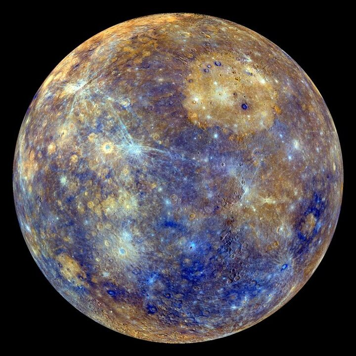
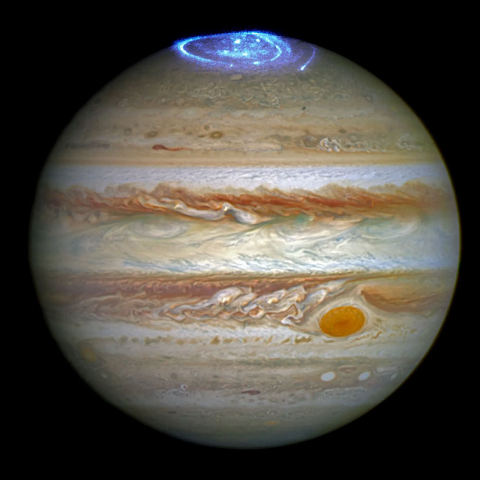

| Imagen | Datos | Imagen | Datos | Imagen | Datos | |||
|---|---|---|---|---|---|---|---|---|
|  | Distancia del sol(km): | 149.6 million | |
Distancia del sol(km) | 108.2 million | |
Distancia del sol(km) | 149.6 million |
| Radio(km): | 2437 | Radio(km) | 6052 | Radio(km) | 6371 | |||
| Gravedad: | 3.7 m/s² | Gravedad | 8.87 m/s² | Gravedad | 9.8 m/s² | |||
| Masa(kg): | 3.301 x 10^23 | Masa(kg) | 4.8767 x 10^24 | Masa(kg) | 5.972 x 10^24 | |||
| Duración del día (días terrestres): | 58,6 | Duración del día (días terrestres) | 243 | Duración del día (días terrestres) | 24h, 60m, 4s | |||
| Temperatura(max/min): | 430ºC/-173°C | Temperatura(max/min) | 475ºC/462°C | Temperatura(max/min) | 58°C/-89°C | |||
|
Distancia del sol(km) | 227,943,824 |  | Distancia del sol(km) | 750 millones | |
Distancia del sol(km) | 1,429 million |
| Radio(km) | 3389 | Radio(km) | 69,911 | Radio(km) | 58,232 | |||
| Gravedad | 3.71 m/s² | Gravedad | 24.79 m/s² | Gravedad | 10.44 m/s² | |||
| Masa(kg) | 6.417 x 10^23 | Masa(kg) | 1.898 x 10^27 | Masa(kg) | 5.683 x 10^26 | |||
| Duración del día (días terrestres) | 1.03 | Duración del día (días terrestres) | 0d 9h 56m | Duración del día (días terrestres) | 0d 10h 42m | |||
| Temperatura(max/min) | 20°C/-125°C | Temperatura(max/min) | -75°C/-163°C | Temperatura(max/min) | -103°C/-167°C |